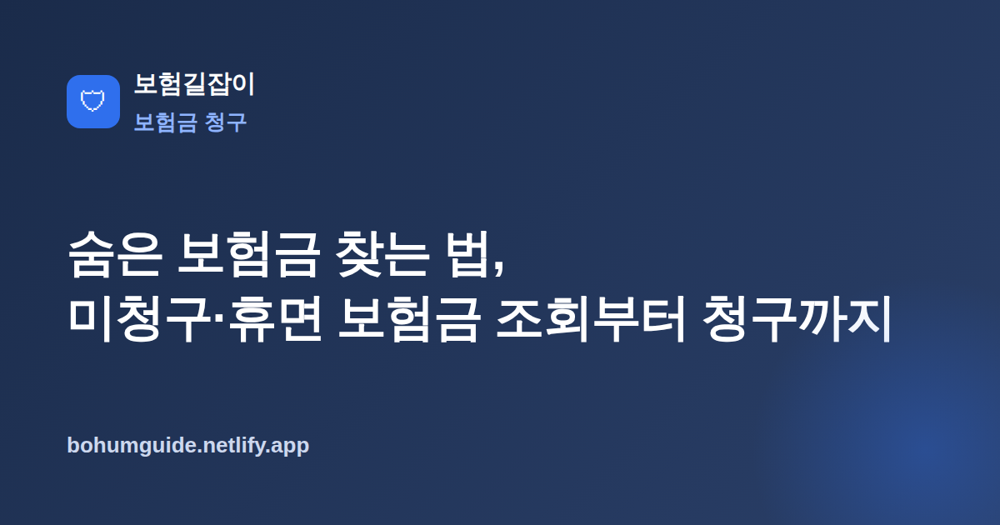

숨은 보험금 찾는 법, 미청구·휴면 보험금 조회부터 청구까지
가입한 사실조차 잊고 있던 보험, 받을 수 있는데 청구하지 않은 보험금이 생각보다 많습니다. 공적 통합조회 서비스를 이용하면 흩어진 내 보험과 숨은 보험금을 한 번에 확인하고 청구할 수 있습니다.

✍️ 편집자 참고: 본 글은 초안입니다. 조회 서비스·절차는 바뀔 수 있으니 게시 전 최신 내용을 검수·수정해 주세요.
보험은 오래 유지하는 계약이다 보니, 시간이 지나면서 가입 사실 자체를 잊거나 받을 수 있는 보험금을 청구하지 않은 채 넘어가는 경우가 많습니다. 다행히 여러 협회·기관이 흩어진 계약과 숨은 보험금을 한곳에서 조회할 수 있도록 공적 통합조회 서비스를 운영하고 있어, 순서만 알면 어렵지 않게 확인할 수 있습니다.
숨은 보험금이란 무엇인가
흔히 말하는 '숨은 보험금'은 받을 수 있는데 아직 찾아가지 않은 보험금을 통칭합니다. 크게 지급 사유는 발생했지만 청구하지 않은 미청구 보험금, 계약 기간 중 일정 조건에서 나오는 중도 보험금(자녀 축하금·건강진단금 등), 만기가 지났는데 찾아가지 않은 만기 보험금, 그리고 소멸시효까지 지나 사업자가 보관 중인 휴면 보험금으로 나뉩니다.
| 유형 | 설명 |
|---|---|
| 미청구 보험금 | 지급 사유가 발생했으나 청구하지 않아 지급되지 않은 금액 |
| 중도 보험금 | 계약 유지 중 특정 시점·조건에 지급되는 축하금·건강자금 등 |
| 만기 보험금 | 만기가 도래했으나 수령하지 않은 만기환급금 등 |
| 휴면 보험금 | 소멸시효가 지나 보험사·서민금융진흥원이 보관 중인 금액 |
숨은 보험금은 왜 생기나
대부분 '몰라서' 생깁니다. 이사 후 주소나 연락처가 바뀌어 보험사 안내문이 닿지 않거나, 오래된 계약이라 가입 사실 자체를 잊은 경우가 많습니다. 또 계약자·피보험자·수익자가 다른 계약에서 수익자가 본인이 받을 돈이 있다는 사실을 모르는 경우도 흔합니다. 특히 가족이 사망·상해 등으로 계약자가 바뀌었을 때 이런 누락이 자주 발생합니다. 권리 관계가 헷갈린다면 계약자·피보험자·수익자 차이를 먼저 정리해 두면 조회 결과를 해석하기 쉽습니다.
또 하나 흔한 원인은 단체보험이나 무료로 제공된 보장처럼 본인이 직접 가입하지 않은 계약입니다. 회사·카드사·지방자치단체 등이 가입해 준 보장은 대상자조차 존재를 모르는 경우가 많아, 사고나 진단이 있었는데도 그냥 지나치기 쉽습니다. 이런 계약도 통합조회 대상에 포함되므로, "내가 든 보험만 있겠지"라고 단정하지 말고 전체 목록을 한 번은 확인해 보는 것이 좋습니다.
통합 조회 방법
가장 확실한 출발점은 공적 통합조회 서비스입니다. 생명보험협회·손해보험협회가 함께 운영하는 '내보험찾아줌'에서는 본인 명의로 가입된 모든 보험계약과 숨은 보험금을 한 번에 조회할 수 있습니다. 본인인증(공동·금융인증서 등)만 하면 여러 보험사에 흩어진 계약을 통합해서 보여 줍니다. 생명보험과 손해보험을 가리지 않고 한 화면에서 확인할 수 있어, 어느 회사에 무엇을 들었는지 기억나지 않아도 전체 그림을 잡을 수 있습니다.
휴면 보험금은 어디서 보나
소멸시효까지 지난 휴면 보험금은 서민금융진흥원의 휴면예금·보험금 조회 서비스에서 확인·지급 신청이 가능합니다. 통합조회에서 숨은 보험금이 잡히면 해당 보험사로, 휴면 상태로 넘어간 금액은 서민금융진흥원으로 안내되는 구조라고 이해하면 됩니다. 어느 경로든 수수료 없이 무료로 조회할 수 있으니, 유료 대행을 권하는 곳은 주의해서 판단하세요.
핵심 정리
숨은 보험금 조회는 원칙적으로 무료입니다. 먼저 공적 통합조회로 전체 계약을 확인하고, 휴면으로 넘어간 금액은 서민금융진흥원에서 별도로 확인하는 2단계만 기억하면 됩니다.
실전: 조회 후 청구 절차와 소멸시효 주의
조회로 대상이 확인되면 실제 청구는 해당 보험사를 통해 진행합니다. 통합조회는 '어디에 무엇이 있는지'를 알려 줄 뿐, 지급은 각 보험사가 하므로 마지막 청구 단계는 직접 챙겨야 합니다. 큰 흐름은 다음과 같습니다.
- 통합조회에서 내 계약·숨은 보험금 목록을 확인하고 어느 보험사인지 파악
- 해당 보험사에 연락해 지급 사유·필요 서류(청구서, 신분증, 통장 사본 등) 안내받기
- 사망·후유장해 등은 수익자·상속인 관계 서류가 추가로 필요할 수 있음
- 지급 계좌·연락처가 예전 정보라면 최신 정보로 갱신해 안내가 닿게 하기
- 오래된 건이라도 포기하지 말고 먼저 문의해 지급 가능 여부 확인
소멸시효, 오래된 건일수록 서두르기
보험금을 청구할 수 있는 권리에는 기한이 있습니다. 일반적으로 보험금 청구권 소멸시효가 지나면 청구가 어려워질 수 있으므로, 받을 것이 있어 보이면 미루지 말고 바로 확인하는 것이 안전합니다. 다만 시효가 지난 건도 휴면 보험금 형태로 남아 지급받을 수 있는 경우가 있으니, 오래됐다는 이유만으로 포기하지 말고 반드시 조회해 보세요. 서류나 절차 전반이 낯설다면 보험금 청구 절차 총정리를 참고하면 한 번에 정리하기 쉽습니다.
요약
숨은 보험금은 미청구·중도·만기·휴면 보험금을 아우르며, 주소 변경이나 잊힌 계약, 수익자 미인지 때문에 생깁니다. 먼저 공적 통합조회('내보험찾아줌' 등)로 내 전체 계약과 숨은 보험금을 무료로 확인하고, 휴면으로 넘어간 금액은 서민금융진흥원에서 별도로 조회하세요. 대상이 잡히면 해당 보험사로 청구하되, 소멸시효가 있으므로 오래된 건일수록 서둘러 문의하는 것이 핵심입니다. 한 번 확인해 두면 가족의 계약까지 정리할 수 있으니 미루지 말고 조회부터 시작해 보세요.
참고할 수 있는 공신력 있는 자료
- 금융감독원 — 보험금·소비자 안내
- 금융소비자 정보포털 파인 — 통합 금융정보 조회
- 생명보험협회 — 보험 제도·조회 안내
본 정보는 일반적인 안내이며, 조회·청구 방법과 지급 조건은 각 기관·보험사와 전문가 상담을 통해 반드시 확인하시기 바랍니다.